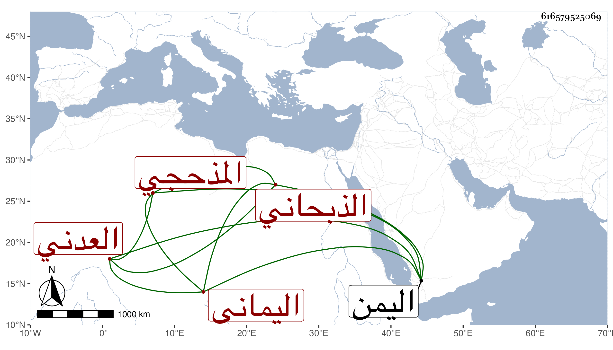

0902Sakhawi.DawLamic.ITO20230111-ara1.EIS1600.616579525069
Biography ID: 616579525069
627
محمد بن سعيد بن أحمد الجمال الذبحاني المذحجي اليماني العدني . من صلحاء اليمن هو وأبوه . كان صوفيا مباركا ، تفقه في بدايته واشتغل واجتهد ودرس قليلا ثم تصوف وغلب عليه التصوف وطالع كتبه وعمل السماع . وكان منجمعا قليل الخلطة لا يخرج إلا للجمعة أو لدعوة كثير الأنس بالغرباء والاستفادة منهم وللعامة فيه اعتقاد كبير ، واقتنى كتبا كثيرة وكتب رسائل في التصوف غير سالمة من الخلل اللفظي ولا يقبل ممن يرشده إلى الصواب بل يتكلف لتوجيه ما يبديه . مات في جمادى الأولى سنة خمس وسبعين وقال لي عبد الله بن عبد الوهاب الكازروني المدني وهو ممن لقيه إنه مات في حياة أبيه .
